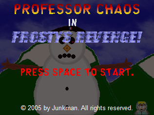
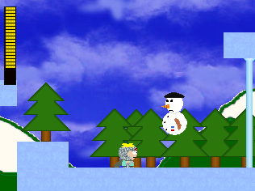
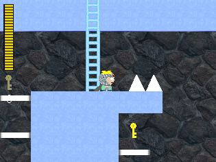

Frosty's Revenge
Junkman
Frosty may have been defeated by Jesus a long time ago, but the snowy freak is back for more! To make matters worse, he's become entitled to French nationality and has created his own army of snowmen and evil penguins to take over South Park. Playing as Butters, who dons his Professor Chaos disguise, you must battle Frosty and his minions over 4 taxing levels that will put your platformer skills to the test. Not as good as other Junkman titles such as Planet of Cartmans
2, but a solid, challenging platformer - particuarly impressive given it was put together in just a matter of weeks. Made for the 1st South Park Game-Making Contest.
2024 South Park Gaming